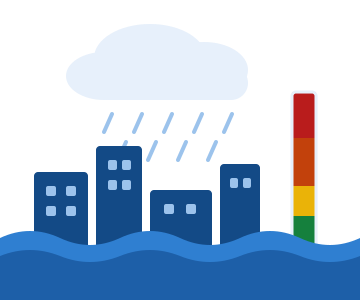

São Paulo · alerta de enchente por bairro
Vai chover forte no seu bairro?
O Clima Safe junta a previsão de chuva com o risco de alagamento do seu bairro e responde de um jeito simples: se é hora de se preparar, o que fazer e para onde ir.
Ver o alerta do meu bairro Simular uma chuva
- ODS 11 Cidades e comunidades sustentáveis
- ODS 13 Ação contra a mudança global do clima

Para quem é
Para pessoas que moram em bairros com alagamento recorrente e costumam descobrir o perigo quando a água já chegou, e não sabem para onde ir.
O Clima Safe dá esse aviso antes, em linguagem simples, para os 96 bairros da cidade de São Paulo, e mostra a chuva prevista nos 39 municípios da Grande São Paulo.
O problema em números
-
8.270.127
Pessoas viviam em áreas de risco de enchentes e deslizamentos no Brasil, em 872 municípios (dados de 2010).
Fonte: IBGE e CEMADEN, População em áreas de risco no Brasil (2018), com base no Censo de 2010.
-
674.329
Pessoas em áreas de risco só no município de São Paulo, o 2º maior número do país (dados de 2010).
Fonte: IBGE, divulgado em 2018 (página do estudo).
-
21 mortes
Registradas pela Defesa Civil de São Paulo entre dezembro de 2025 e março de 2026, em temporais.
Fonte: Defesa Civil de SP, noticiado pelo Metrópoles.
Como funciona
-
Escolha o seu bairro
Use a sua localização, digite o nome ou clique no mapa da cidade de São Paulo.
-
Veja a cor do alerta
Verde, amarelo, laranja ou vermelho, de acordo com a chuva prevista e o risco de alagamento do bairro.
-
Saiba o que fazer
Receba alertas e informações do que fazer e onde fica o ponto de apoio público mais próximo.
Feito para o dia de chuva
Funciona com pouca internet
Sem conexão, o simulador continua calculando o alerta. A internet só é usada para buscar a previsão real.
Acessibilidade visual
Os botões na barra superior aumentam e diminuem o tamanho do texto, e alteram o modo de contraste.
Alerta oficial
O alerta da Defesa Civil avisa que vem chuva forte. O Clima Safe explica o que isso quer dizer para o seu bairro e para onde ir.